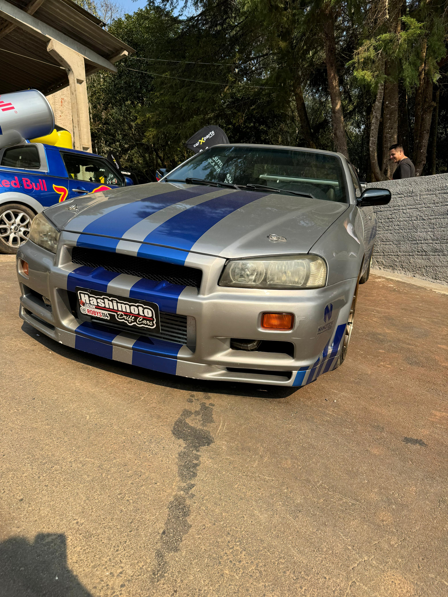

Capturando a essência dos carros
Este espaço foi criado para reunir as melhores capturas do universo sobre quatro rodas — desde detalhes que revelam a personalidade de cada veículo até composições que transmitem velocidade, potência e estilo. Aqui, você encontrará imagens impactantes que refletem minha paixão por carros e meu compromisso com a excelência visual. Além disso, você poderá conhecer os serviços que ofereço, desde ensaios personalizados até cobertura de eventos. Se você busca registrar seu veículo com qualidade profissional ou deseja destacar sua marca com imagens únicas, entre em contato comigo. Será um prazer transformar sua ideia em arte sobre rodas.
